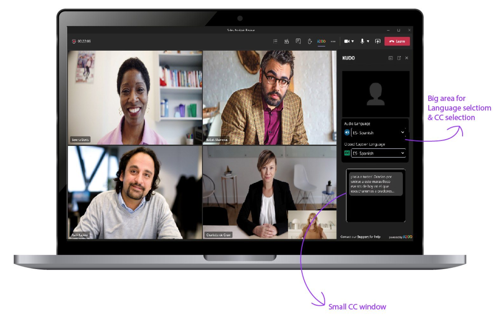
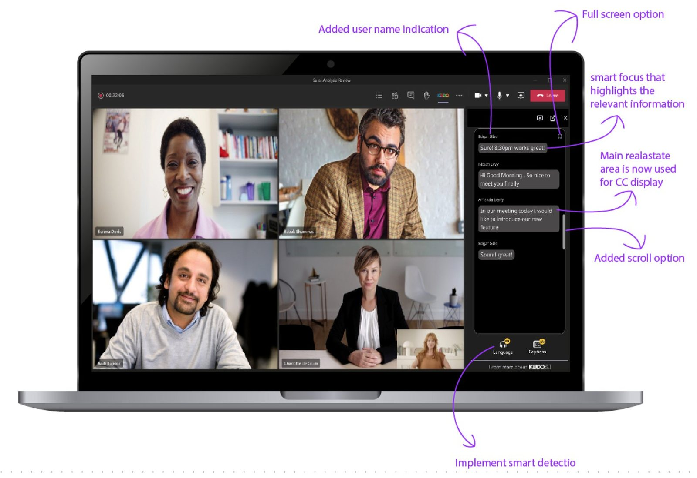
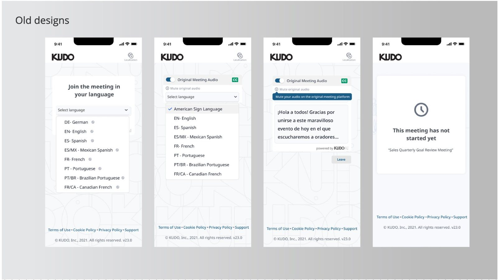
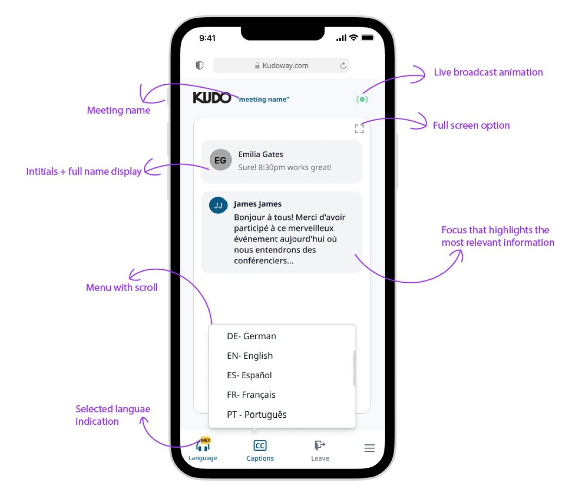
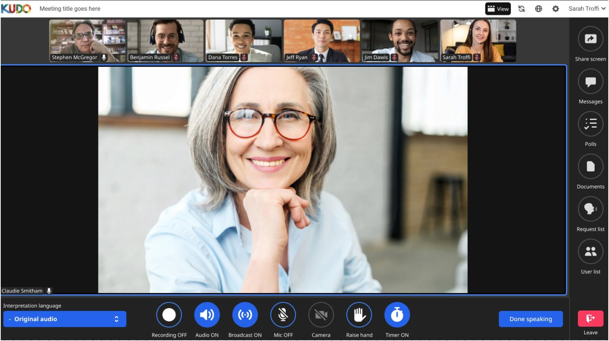
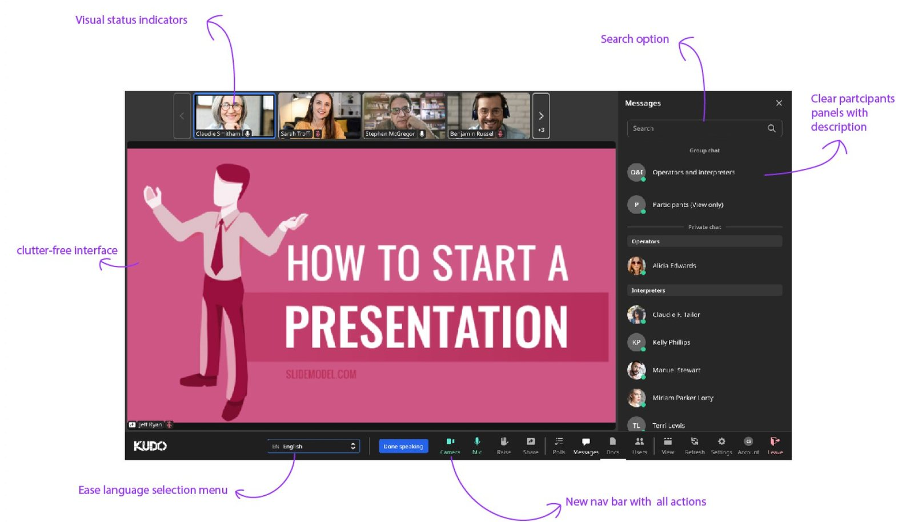
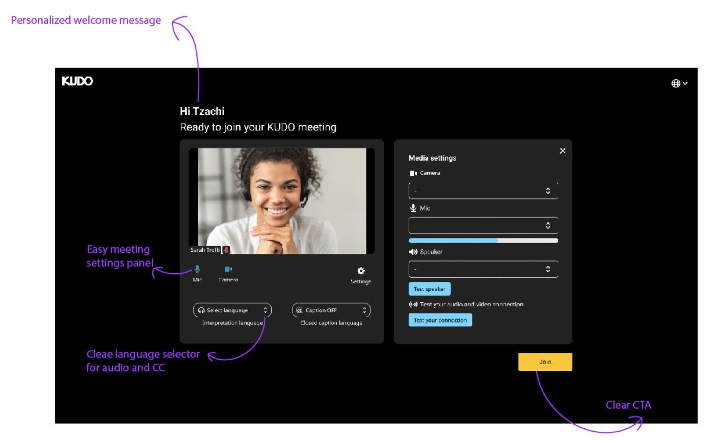
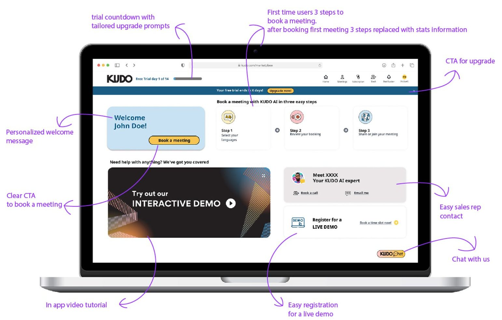
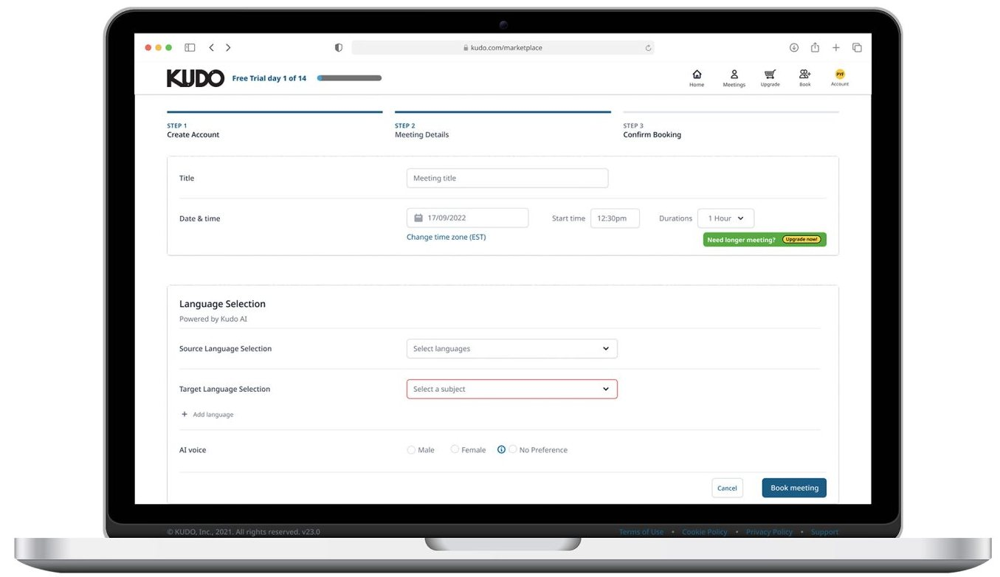
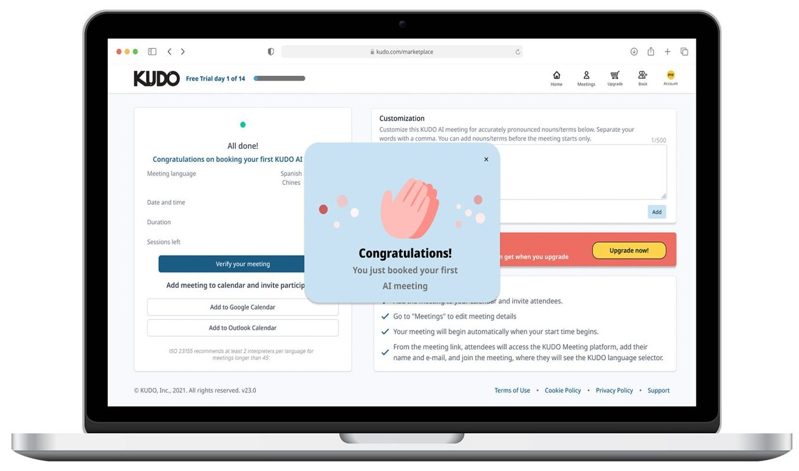

KUDO lets people speak their own language in a meeting while everyone else hears or reads it in theirs. As the only designer, I turned four separate surfaces into one experience: the web platform, the video platform, the Microsoft Teams app and the mobile app.
On every KUDO surface, the user does the same thing: choose a language, then listen to the interpretation or read the captions. But each surface had been built on its own, with its own controls and layout. A user who joined from Teams on Monday and from their phone on Tuesday met two different products.
Research on each surface kept finding the same problems:
Cluttered interfaces, inconsistent visual cues, and no clear sign that a meeting was live.
Language selection was complex, and switching between audio and captions was confusing.
Subtitles sat in small, badly placed windows, with accessibility issues on top.
Booking a meeting had its own gap. AI interpretation works better when it knows the context, but organizers had no way to tell it who would attend, which languages they speak, or what their titles are.
I started with the Teams app, because it had the least room. Sketching for it was different from a normal project: the widget sits beside Teams' own video grid, so every pixel had to earn its place.
The old widget spent its biggest area on language selection, and squeezed the captions, which people actually watch, into a small window at the bottom. I flipped that: captions get the panel, and language choice moves to a quick menu.


After two design rounds, I tested a prototype with users to confirm every pain point was solved. Then came the key decision. In my words from that time: "Following our work on the MS Teams project, we recognized the opportunity to create a cohesive user flow across our different products." The pattern that worked in the smallest space became the core of every other surface.
The shared pattern has seven parts: a full caption panel, icons instead of text where possible, a quick-select language menu, automatic detection of the user's language, a settings panel, high-contrast modes, and smart focus that highlights the most relevant information.
The old flow made users pick a language from a long list before they could see anything. The new one opens on the conversation itself, with the meeting name, a live indicator and a language menu one tap away.


KUDO's own meeting platform also runs with live human interpreters, so it had to serve attendees and interpreters at once. I cleared the interface, moved every action into one bar, and put the language menu next to the controls people already use.



On the web platform, the dashboard is built around one goal: book your first AI meeting in three steps. After the first booking, the three steps are replaced by usage stats.

The booking flow is where interpretation quality is decided. Organizers pick the source and target languages and an AI voice. Then, in the customization step, they tell the AI who will be in the meeting, which languages each person speaks, and their titles. With that context, the AI interprets each speaker correctly from the first minute.


| Result | Evidence |
|---|---|
| One interpretation experience across four surfaces, built from a single core pattern | Final designs for Teams, mobile, video and web |
| Every pain point found in research addressed and confirmed before handoff | Usability testing on prototypes |
| Captions became the main content in the Teams app, not a small side window | Before / after redesign |
| AI meetings booked with context about attendees, languages and titles | New customization step in booking |
Designing for the most constrained surface first gave me a pattern that fit everywhere else. And with AI products, a lot of the experience happens before the AI runs: the context users give it decides how good the result will be.